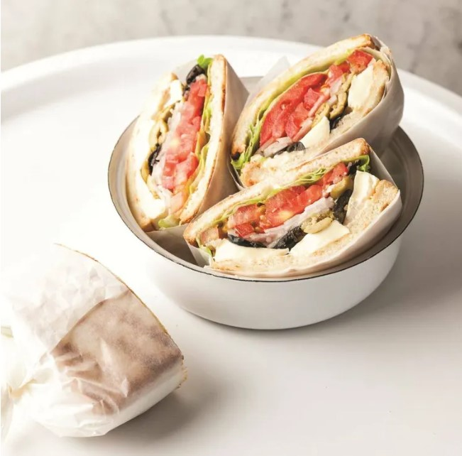

111

100개
그리스식 샐러드속을 넣은
올리브 샌드위치
올리브와 브리치즈, 토마토, 양상추를 듬뿍 넣어 그리스식 샐러드를 만들어 샌드위치를 만들어보세요. 불에 굽거나 양념을 더하지 않아 자연 재료 그대로의 신선함을 느낄 수 있답니다. 불포화지방산이 다량 함유된 올리브를 잔뜩 넣어 고소한 풍미가 무척 좋아요. 치즈까지 들어가 자칫 느끼할 수도 있어 신선한 양상추와 토마토로 상큼함을 살렸답니다.

시간

난이도

1인분
슬라이스
1. 올리브는 반으로 잘라 칼로 눌러 으깨고 토마토는 0.5cm 폭으로 동그랗게 썰어주세요. 양상추는 깨끗이 씻어 준비하고 양파는 채칼로 얇게 썰어줍니다.
2. 브리치즈는 20등분 해주세요.
3. 빵을 그릴팬에 굽고 한쪽 면에 버터를 바른 뒤 양상추-토마토-양파-올리브-브리치즈 순으로 올려주세요.
4. 버터를 바른 빵으로 덮으면 완성이랍니다.

1. 올리브는 반으로 잘라 칼로 눌러 으깨고 토마토는 0.5cm 폭으로 동그랗게 썰어주세요. 양상추는 깨끗이 씻어 준비하고 양파는 채칼로 얇게 썰어줍니다.

2. 브리치즈는 20등분 해주세요.

3. 빵을 그릴팬에 굽고 한쪽 면에 버터를 바른 뒤 양상추-토마토-양파-올리브-브리치즈 순으로 올려주세요.

4. 버터를 바른 빵으로 덮으면 완성이랍니다.

에어프라이어 두부 버섯 샐러드
싱싱한 겉바속촉 샐러드
"
"의 사진 후기
유저 닉네임

좋아요

에어프라이어 두부 버섯 샐러드
싱싱한 겉바속촉 샐러드
샌드위치
간편 점심으로 충분
에어프라이어 두부 버섯 샐러드
싱싱한 겉바속촉 샐러드
더보기
유저 아이디

후기작성날짜

좋아요

신고
유저 아이디
후기작성날짜
좋아요
신고
유저 아이디
후기작성날짜
좋아요
신고